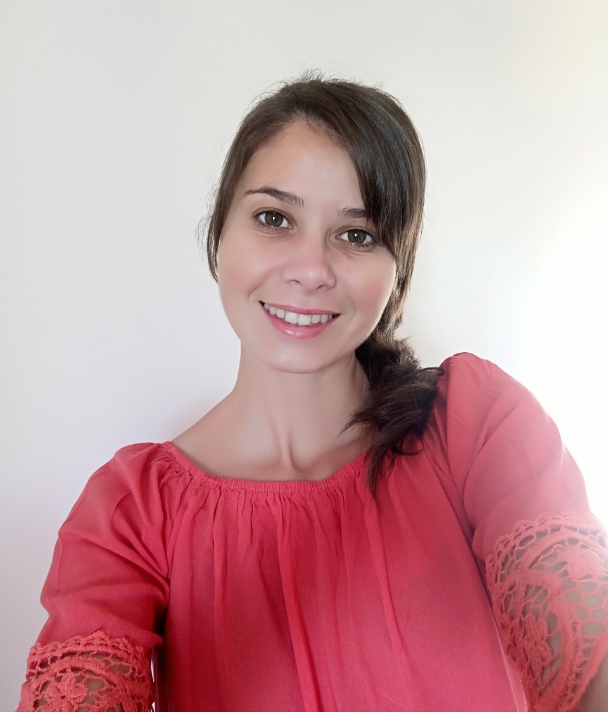

{{nombre}} {{apellido}}
Full Stack Developer Jr
SOBRE MI
Soy Jesica Rosin, tengo 31 años y estudio Desarrollo Web Full Stack en Argentina Programa. Me encanta la programación y me interesa aprender nuevas tecnologías y habilidades. Tengo conocimientos en HTML, CSS, JavaScript y Angular. Uso Git y Github para compartir mi trabajo con otros desarrolladores. Me gusta trabajar en equipo y aprender cosas nuevas para estar al día con la tecnología y los avances en el desarrollo web.